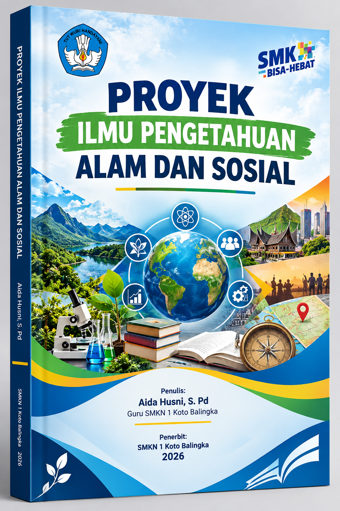

Daftar Pertemuan & Bab
I
Fondasi Sains dan Sistem Kehidupan
II
Materi, Energi, dan Dinamika Bumi
III
Lingkungan, Sumber Daya, dan Evaluasi
IV

Sebuah panduan komprehensif yang dirancang untuk membekali peserta didik Kelas X dengan pemahaman ilmiah, kesadaran sosial, dan keterampilan proyek yang relevan dengan dunia kerja dan kehidupan abad ke-21.